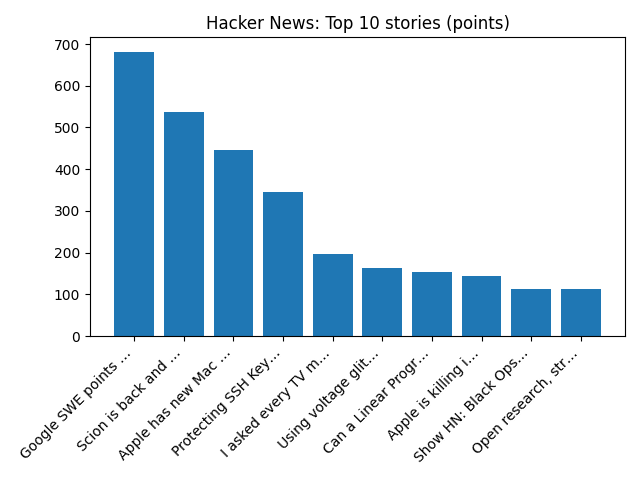

US Treasury Secretary Scott Bessent relocated after alleged Iranian threats
BBC — World
YOUR DAILY INTELLIGENCE BRIEF · 2026-11-11
Global watch: US Treasury Secretary Scott Bessent relocated after alleged Iranian threats, What's behind Democratic Socialists' historic victories in the midterms?.
Northern Virginia: Data Centers Are Moving In. What Does That Mean for Your Home Value? - Alexandria Living Magazine, 5 Official ‘Hallmark Christmas Towns’ Within Driving Distance of Northern Virginia - Northern Virginia Magazine.

Global coverage includes US Treasury Secretary Scott Bessent relocated after alleged Iranian threats; What's behind Democratic Socialists' historic victories in the midterms?; Indonesia's vice president resigns amid signs ruling alliance is fraying. Local coverage includes Data Centers Are Moving In. What Does That Mean for Your Home Value? - Alexandria Living Magazine; 5 Official ‘Hallmark Christmas Towns’ Within Driving Distance of Northern Virginia - Northern Virginia Magazine.

Fondouk of French
The Fondouk of the French is a caravanserai located in the Medina of Tunis in the old French district. It is near Bab El Bhar.
https://en.wikipedia.org/wiki/Fondouk_of_French
NGC 4449: Small Galaxy, Big Impact
Runs so far today: 2